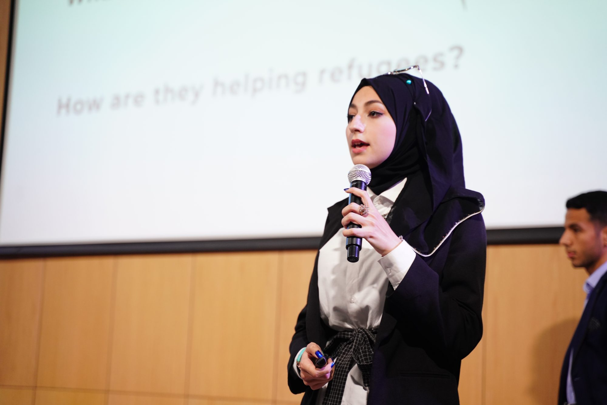

Digital Resilient Futures Fellowship
For those who are ready to lead, build and shape what comes next. Whether you’re a technologist, a budding entrepreneur or someone who knows they have more to offer, this fellowship is your entry point into a community of changemakers, and into a career that matters.

- Length
- 4 months, fully online
- Who it’s for
- Technologists, budding entrepreneurs and emerging leaders, aged 18–35
- Focus
- Leadership, strategy and today’s most scalable tech sectors
- Next cohort
- Dates to be announced · 30 fellows per cohort
An intensive experience combining strategy and leadership skills training, hands-on exposure to the most relevant and scalable tech sectors, and peer-to-peer learning, mentorship and collaborative project development.
The fellowship
Topics covered

- Topic 01
Leadership in the Digital Age
Leading people and projects when the tools and the context keep changing.
- Topic 02
Strategic Thinking for a Resilient Future
Planning and making decisions under uncertainty.
- Topic 03
Digital Business Models & Entrepreneurial Fundamentals
How digital ventures create value, and how to get one off the ground.
- Topic 04
FinTech & Inclusive Digital Finance
Payments, lending and financial services that reach more people.
- Topic 05
Education in the Age of AI
How learning, teaching and skills are changing with AI.
- Topic 06
HealthTech & Telemedicine Systems
Digital tools that widen access to care.
- Topic 07
E-Commerce, Professional Services and Creative Work
Selling, freelancing and building creative careers online.
Topics may change at the discretion of the fellowship organisers.

- Build cognitive and leadership skills
- Dive into the most relevant and scalable tech sectors shaping the future
- Learn at your own pace through a guided self-learning playbook
- Join live workshops led by industry experts who understand the realities of this region
- Connect with a growing network of peers and leaders who will challenge and champion you
- Practical skills in digital innovation
- Tools for leading under uncertainty
- A mindset for ethical and strategic tech adoption
- The confidence to guide teams, launch ventures and mentor the next generation
How to apply
From application to your first session
- 1Now
Get notified
Leave your email and we’ll tell you when the next cohort opens.
- 2When it opens
Apply
Tell us about you and the change you want to make.
- 3Selection
Interview
A conversation with the fellowship team.
- 4Start
Fellowship begins
Four months online with a cohort of 30 fellows.
Questions
About the fellowship
Technologists, budding entrepreneurs and anyone aged 18–35 who knows they have more to offer and is ready to lead, build and shape what comes next.
Each cohort has 30 fellows, so everyone gets real attention from mentors and from each other.
Yes. The fellowship runs fully online over four months.
Dates are still to be announced. Leave your email above and we’ll let you know as soon as applications open.
You stay part of a global community of fellows and the wider Re:Coded alumni network.
Be first to hear when the next cohort opens
Leave your details and we’ll email you the dates and how to apply. Nothing else.
You’re on the list
We’ll email you as soon as applications for the next cohort open.
Free courses
Not quite the right fit?

20,000+ free, self-paced courses
Learn AI, coding, UX and more at your own pace, and earn certificates along the way. No cohort, no deadline: you can start tonight.